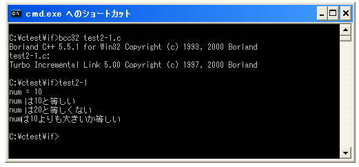

関係演算子
if文などの条件分岐の時には条件式の内容が真か偽かによって処理を分けます。条件式には「xxxと等しい」とか「xxxよりも大きい」などを指定することになります。
この条件式の中で使用されるのが関係演算子です。まずは関係演算子の種類を確認します。
| 演算子 | 記述例 | 意味 |
|---|---|---|
| == | a == b | bがaに等しい |
| != | a != b | bがaに等しくない |
| > | a > b | bよりaが大きい |
| >= | a >= b | bよりaが大きいか等しい |
| < | a < b | bよりaが小さい |
| <= | a <= b | bよりaが小さいか等しい |
関係演算子では演算子の左辺と右辺を比較し、等しいかどうかや大きいかどうかなどを判別します。そして結果として真か偽かを評価します。(C言語では他の言語のようにboolean型のようなものは存在しません。また偽は「0」、真は「0以外」という整数値で表されることもあります)。
等しいかどうかの比較
等しいかどうかを比較するには「==」を使います。例えば次のように記述します。
int x = 10;
if (x == 10){
printf("x は10と等しい¥n");
}
この場合は変数「x」に格納されている値が「10」と言う数値と等しいかどうかを判別します。等しい場合は条件式が「真」、等しくない場合は条件式が「偽」となります。
演算子の左辺と右辺は数値などの固定値であってもいいですし変数であっても構いません。変数の場合は変数に格納されている値が比較されます。
よくある間違いとして「==」の代わりに「=」と書いてしまうことです。先ほどの例で言えば「if (x=10){」です。この場合は変数「x」に10と言う数値が格納され、その結果が真か偽かを条件式として判別するようなプログラムとなってしまいます。この場合でも文法的には間違いではないためエラーにはなりませんので注意が必要です。
また等しくないかどうかを比較するには「!=」を使います。例えば次のように記述します。
int x = 10;
if (x != 20){
printf("x は20と等しくない¥n");
}
この場合は変数「x」に格納されている値が「10」と言う数値と等しくないかどうかを判別します。等しくないい場合は条件式が「真」、等しい場合は条件式が「偽」となります。
大きいかどうかの比較
演算子の右辺と左辺の数値の大きさを比較するには「>」「>=」「<」「<=」を使います。例えば次のように記述します。
int x = 10;
if (x > 5){
printf("x は5よりも大きい¥n");
}
if (x < 20){
printf("x は20よりも小さい¥n");
}
「>」の場合は右辺より左辺が大きい場合に条件式が「真」となります。また「<」の場合は右辺より左辺が小さい場合に条件式が「偽」となります。
また「>=」の場合には大きいか等しい、「<=」の場合には小さいか等しいについて評価します。
int x = 10;
if (x >= 5){
printf("x は5よりも大きいか等しい¥n");
}
if (x <= 20){
printf("x は20よりも小さいか等しい¥n");
}
サンプルプログラム
では簡単なサンプルプログラムを作成して試してみます。
#include <stdio.h>
int main(void){
int num;
num = 10;
printf("num = %d¥n",num);
if (num == 10){
printf("num は10と等しい¥n");
}
if (num != 20){
printf("num は20と等しくない¥n");
}
if (num > 10){
printf("numは10よりも大きい¥n");
}
if (num >= 10){
printf("numは10よりも大きいか等しい¥n");
}
return 0;
}
上記を「test2-1.c」の名前で保存します。まずコンパイルを行います。
コンパイルが終わりましたら「test2-1」と入力して実行します。

( Written by Tatsuo Ikura )

著者 / TATSUO IKURA
初心者～中級者の方を対象としたプログラミング方法や開発環境の構築の解説を行うサイトの運営を行っています。